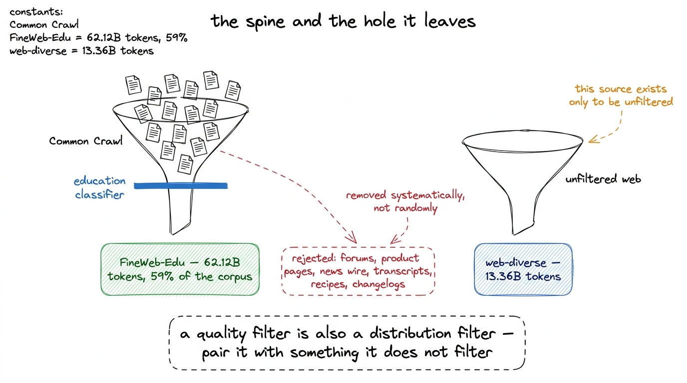
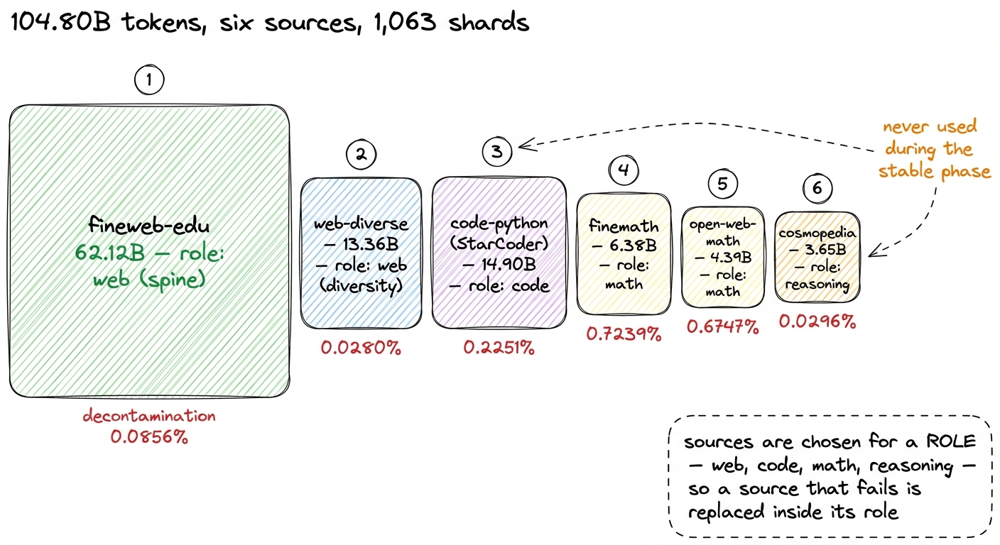
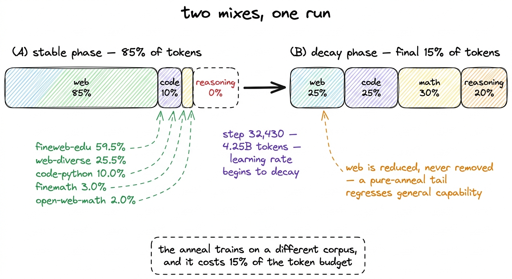
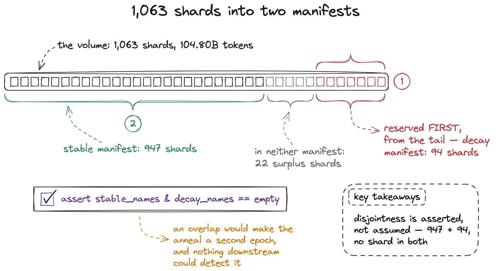
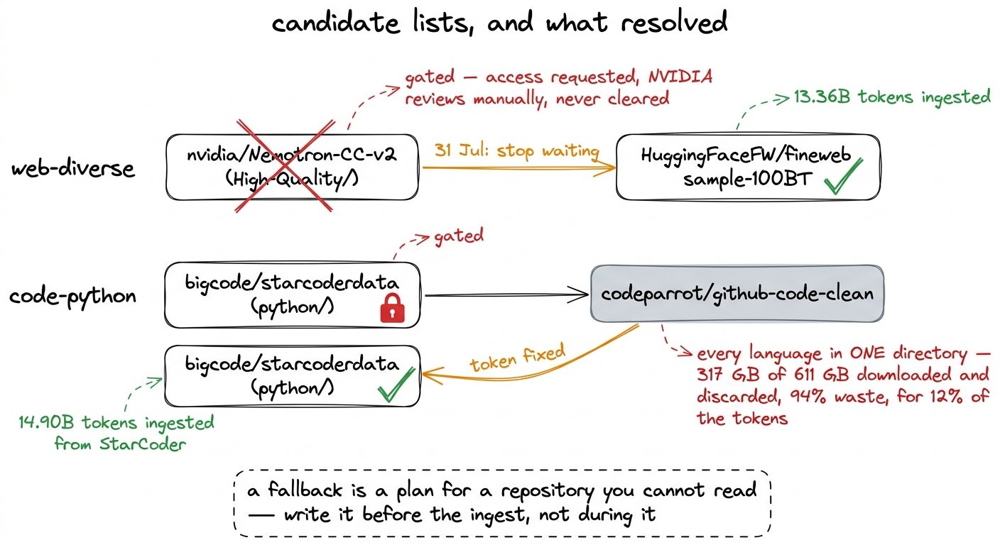
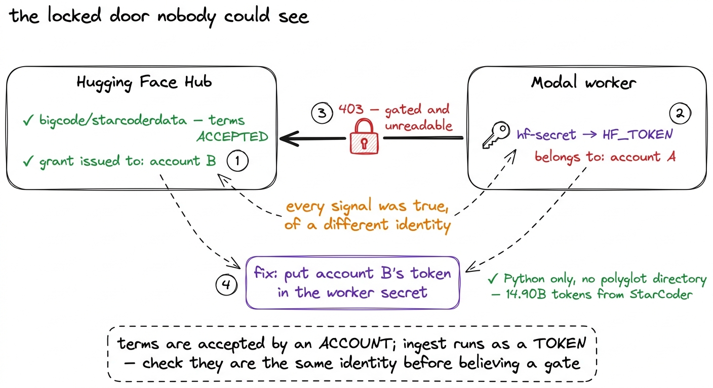

Assembling the corpus
FineWeb-Edu as the spine, five more sources around it, and the two gated repositories that shaped the mix more than any design decision did.
A pretraining corpus is usually described as a design decision. You choose sources, you choose weights, you write down a mix, and the model that comes out is the mix you chose. Ours ended up at 104.80 billion tokens in 1,063 shards across six sources, and the design decisions in that sentence are real. However, the two things that moved the corpus furthest from its intended shape were not decisions at all. They were a gated repository that never cleared, and an access token belonging to the wrong account. This chapter is about both halves.
FineWeb-Edu as the spine, and the hole it leaves
The spine of the corpus is FineWeb-Edu, 62.12 billion tokens after decontamination, which is 59% of everything we ingested. It is Common Crawl web text filtered by a classifier trained to score how educational a page is, keeping the high scorers. For a small model on a small token budget this is the right default: a 145-million-active-parameter model at 5 billion tokens does not have the capacity to extract much from the average scraped page, and a filter that removes the average page raises the value of every token it keeps.
The filter is also the problem. A classifier trained to recognise educational writing removes forum threads, product pages, news wire, transcripts, recipes, changelogs and most of the ordinary internet, because none of those are educational and all of those are how people write. A model trained only on the survivors sees a narrow slice of the distribution it will be asked to model, and the narrowness is systematic rather than random.
So the corpus carries a second web source whose role is to be unfiltered by that classifier. In sources.py it is called web-diverse, its note reads "diversity against FineWeb-Edu's education filter", and it contributes 13.36 billion tokens. What actually filled that role is the subject of the second half of this chapter, and it is not what was planned.

figure rendering · FineWeb-Edu is the spine of the corpus. A second web source sits besidThe six sources
Four more sources sit around those two. Each is chosen for a role rather than for itself, which matters later when one of them has to be swapped out.
| source | role | documents scanned | removed | tokens |
|---|---|---|---|---|
| fineweb-edu | web | 62,245,000 | 53,266 | 62.12B |
| web-diverse (FineWeb) | web | 20,034,526 | 5,604 | 13.36B |
| code-python (StarCoder) | code | 12,866,649 | 28,968 | 14.90B |
| finemath | math | 4,605,913 | 33,342 | 6.38B |
| open-web-math | math | 2,271,277 | 15,325 | 4.39B |
| cosmopedia | reasoning | 5,268,046 | 1,559 | 3.65B |
The removal column is the output of decontamination, which runs on raw text before tokenization and drops any document sharing a 13-gram with one of eight benchmark test sets. In total 107,291,411 documents were scanned and 138,064 removed, a rate of 0.1287%. The next chapter is about that filter, and about why the maths corpora dropping roughly ten times more than the web is the result that makes it believable. Here it matters only because the token counts above are post-removal figures, and every mix weight in this chapter is computed from them.
Two sources deserve a line each. Cosmopedia is synthetic textbook-style prose, and it is the only source that never appears during the stable phase. finemath and open-web-math are held separately rather than merged into one maths source because they are filtered differently, so a failure in one rebalances inside the maths role rather than changing how much maths the model sees.

figure rendering · The six sources with their measured post-decontamination token counts.Weights over roles, then weights over sources
The mix is written in two levels rather than one. The first level assigns weight to a role; the second decides which sources fill that role. From data/mixes.py:
# Stage 3: ~2% warmup, long stable phase, final ~15% decay.
DECAY_FRACTION = 0.15
STABLE_ROLES = {"web": 0.85, "code": 0.10, "math": 0.05, "reasoning": 0.00}
DECAY_ROLES = {"web": 0.25, "code": 0.25, "math": 0.30, "reasoning": 0.20}
SOURCE_WEIGHTS = {
"web": {"fineweb-edu": 0.70, "web-diverse": 0.30},
"code": {"code-python": 1.0},
"math": {"finemath": 0.6, "open-web-math": 0.4},
"reasoning": {"cosmopedia": 1.0},
}The separation is what makes the corpus survivable. When a source turns out to be unreadable, its weight is redistributed among the other sources in its own role, and the role weights do not move. The model still sees 85% web during the stable phase whether that web comes from two sources or one. A single-level mix would have silently changed how much web data the model saw every time a repository failed to resolve, which is a change to the recipe disguised as an infrastructure problem.1 plan() records this rather than performing it quietly. Any role with no surviving source, and any source in a live role that did not resolve, appends a line to a warnings list printed with the plan and written into mix_plan.json. A redistribution nobody sees is indistinguishable from a mix that was designed that way.
Multiplying the two levels together gives the stable weights: fineweb-edu 0.70 × 0.85 = 0.595, web-diverse 0.30 × 0.85 = 0.255, code-python the whole 0.10 of the code role, and the maths role splitting 0.05 into 0.03 and 0.02.
The anneal, and why the decay mix is a different corpus
The training schedule is warmup–stable–decay rather than cosine. A WSD schedule holds the learning rate flat through a long stable phase and decays it over a short tail, and in our run that tail began at step 32,430, 4.25 billion tokens in.
The tail is trained on a different mix. Compare the two role vectors above: web falls from 85% to 25%, code rises from 10% to 25%, maths from 5% to 30%, and reasoning goes from nothing at all to 20%. The decay mix is not a slight reweighting of the stable mix. It is a maths-and-code corpus with some web left in it.
The reason for the reweighting is that the stable phase is where the model learns language, and general web text is what teaches language. The decay phase is where the weights settle into their final configuration, and the data they settle on has an outsized influence on what the finished model is good at. Upweighting maths, code and structured reasoning at exactly the moment the learning rate is collapsing costs 15% of the token budget rather than a redesign.
Web is not dropped to zero in the decay mix, and the comment in the code says why: a pure-anneal tail causes a general-capability regression. Keeping a quarter of the tail on web text is what stops the model trading its language modelling for its arithmetic.

figure rendering · The stable and decay mixes. The decay phase trains on what is effectiv947 shards and 94, with no shard in both
A mix over percentages has to become a list of files before a dataloader can read it. The corpus is stored as shards, and build_manifests turns the token plan into two lists of shard names: 947 stable shards and 94 decay shards.
The order in which those lists are built is deliberate. The decay phase is reserved first, from the tail of each source's shard list, and the stable phase is built from whatever is left:
# Reserve the decay phase first: it is the smaller, more valuable claim.
for src, shards in inventory.items():
want = p["phases"]["decay"]["source_tokens"].get(src, 0.0)
take, got = [], 0.0
for sh in reversed(shards): # from the tail, so stable keeps the head
if got >= want:
break
take.append(sh)
got += sh["tokens"]
reserved[src] = takeThen the two manifests are checked against each other, and the check is an assertion rather than a warning:
overlap = stable_names & decay_names
if overlap:
raise AssertionError(
f"{len(overlap)} shards appear in both phases — the anneal would "
"re-show tokens from the stable phase")If a shard appeared in both lists, the anneal would be a second epoch over tokens the model had already seen rather than fresh maths and code. The benchmark improvement attributed to the decay mix would then be partly a memorisation effect, and no measurement in the project could tell the two apart. That is an error that has to be prevented by construction, because it cannot be detected afterwards.
Note that 947 and 94 sum to 1,041, not the 1,063 shards on the volume. The remaining twenty-two appear in neither manifest. The ingest was sized against a larger token budget than the ladder eventually used, so the corpus overshot and the surplus was left in place rather than deleted.2 The overshoot is larger than twenty-two shards suggests. r1 consumed 5.00 billion tokens against a corpus of 104.80 billion, so the run saw about one token in twenty-one of what was ingested. That is a margin rather than waste: discovering mid-run that a source is exhausted and the loader has silently begun a second epoch costs considerably more than storage.

figure rendering · The two mix manifests. The decay phase is reserved from the tail beforWhat the run actually trained on
A plan and a realised mix are different objects, and the second is the one worth reporting. Over r1's stable phase the sampled proportions were, with the target in brackets: fineweb-edu 59.5% (59.5), web-diverse 25.5% (25.5), code-python 10.0% (10.0), finemath 3.0% (3.0), open-web-math 2.0% (2.0). The realised mix tracks the target to three decimal places.
This is a result about the dataloader rather than about the corpus, and it is reported here because it licenses every other statement in this chapter. Weights written into a manifest describe an intention; a mix measured from the tokens the model consumed describes the run. The gap between them is where a sampler bug lives, and the sibling chapter on the manifest bug covers a case where that gap was total: four of six sources pointed at filenames that did not exist and the loader renormalised onto the two that survived, so the stable phase would have trained on 100% finemath while reporting a healthy six-source mix. Agreement to three decimal places is the check that the corrected version works.
The two repositories that shaped the mix
Everything above is design. What follows moved the corpus more.
Sources in sources.py are written as candidate lists in preference order rather than as fixed identifiers, and probe.py resolves each list against the Hub before any money is spent. Dataset repositories get renamed, re-sharded, converted from loading scripts to parquet, and gated behind an access request, and each of those failures looks identical at three in the morning halfway through an ingest.3 probe.py also checks the parquet path prefix, which is a separate trap. A config called sample-100BT lives under sample/100BT/, and a prefix that matches nothing does not fail loudly. It falls through to some other subset of the repository, which for FineWeb means ingesting the full dataset instead of the sample the mix asked for. The probe counts matching parquet files and skips a candidate whose prefix matches zero.
Two of those candidate lists mattered.
nvidia/Nemotron-CC-v2 was the intended diversity source. It is curated Common Crawl text, and its High-Quality subset is exactly the natural-web diversity that FineWeb-Edu's education classifier removes.4 The repository ships six subsets and only one of them fits the role. High-Quality-Synthetic is rephrased text and Diverse-QA is synthetic question-answer pairs; either would have added a second synthetic source next to Cosmopedia rather than the natural-web diversity the role calls for. The candidate names High-Quality/ explicitly rather than taking the repository's default. It is gated. Access was requested, NVIDIA reviews these requests manually, and it never cleared. On 31 July the decision was to stop waiting and take the fallback: HuggingFaceFW/fineweb, sample-100BT, which is unfiltered FineWeb. It fills the same role less well than Nemotron-CC would have, and it fills it without blocking the whole of Stage 1 behind somebody else's review queue. If access ever lands, web-diverse can be re-ingested and the manifests rebuilt; nothing else in the project depends on the choice.
bigcode/starcoderdata was gated too, and its fallback was worse than a quality downgrade. The ungated alternative, codeparrot/github-code-clean, keeps every programming language in one data/ directory with the language as a row field, so extracting Python means downloading everything and discarding almost all of it: 317 GB of the 611 GB total downloaded for 12% of the tokens, which is 94% of the download discarded. That would have roughly doubled the cost and duration of the whole ingest, for a corpus also lower in quality than the gated one.

figure rendering · The two gated repositories. One fallback was taken and one was avoidedThe trap underneath both
The reason both repositories reported as unreadable was not, in the end, entirely about gating.
Terms on a gated Hub repository are accepted by an account, and access is granted to that account. The workers that perform the ingest do not use an account; they use a token, read from a Modal secret. Those two things have to refer to the same identity, and in our case they did not. The secret held a token belonging to one account while the terms had been accepted under another, so from the workers' point of view both repositories were locked regardless of what the browser showed when the grants were checked.
Every observable signal was consistent with a different explanation. The Hub page showed access granted. The probe reported the repository gated and unreadable. Both statements were true, of different identities, and neither of them mentioned an identity at all.
Pointing the workers at the right account resolved it for StarCoder. With the correct token in the secret, bigcode/starcoderdata reads normally, Python only, with no polyglot directory to filter, so code-python's 14.90 billion tokens came from StarCoder and the 94%-discard path was never taken. nvidia/Nemotron-CC-v2 stayed closed, because its problem really was the review queue, and the fallback there was taken for good.

figure rendering · Why both repositories reported as locked. The grants and the token belWhat the pass cost
The full ingest — resolving every source, building the 13-gram index, decontaminating 107 million documents and tokenizing 104.80 billion tokens — cost about $17 of CPU. No GPU is involved in any part of it. Against the $252.35 the training run cost, data preparation is a rounding error.
The recurring cost is storage, at $0.09 per GiB per month. Tokens are stored as uint32, four bytes each, because the vocabulary is 163,840 and uint16 would silently truncate every token above 65,535. Four bytes times 104.80 billion tokens is why the volume, rather than the compute, is what this corpus keeps costing.
That asymmetry is the practical finding of this chapter. The expensive part of assembling a corpus is not the compute; it is the decisions that cannot be undone cheaply. A wrong mix costs a re-ingest. A shard shared between the stable and decay manifests costs a benchmark result nobody can defend. A repository that will not resolve costs whatever the fallback is worth, and the two we hit cost a quality downgrade we accepted and a doubled download we avoided by fixing which account held the token.